In dem Register "Optionen" können verschiedene Optionen definiert werden, die auch Auswirkung auf die Lagerführung und die Statistik haben.
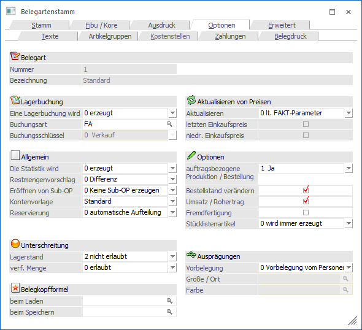
Im oberen Teil des Fensters wird die Belegart angezeigt, welche gerade bearbeitet wird (Felder "Nummer" und "Bezeichnung").
Lagerbuchung
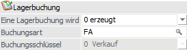
Ø Eine Lagerbuchung wird
An dieser Stelle kann definiert werden, ob eine Lagerbuchung erzeugt werden soll.
ü 0 - erzeugt
Es wird eine
Lagerbuchung, aufgrund der Buchungsart, welche im Feld "Buchungsart" hinterlegt
ist, erzeugt.
ü 1 - nicht erzeugt
Es wird keine
Lagerbuchung erzeugt.
Ø Buchungsart
Hier definieren Sie, mit welcher Buchungsart der Beleg in die Lagerbuchhaltung übernommen wird. Es stehen nur jene Buchungsarten zur Verfügung, die in den Stammdaten (WinLine FAKT - Stammdaten - Lagerbuchungsart) mit dem Typ "Fakturierung" gekennzeichnet wurden.
Der Buchungsschlüssel der hinterlegten Buchungsart wird ebenfalls angezeigt. Möchten Sie einen anderen Buchungsschlüssel verwenden, müssen Sie dies in den Stammdaten der Lagerbuchungsart generell für die Buchungsart ändern.
Hinweis
Die Lagerbuchungsart kann nur geändert werden, wenn
ü keine Belege mit dieser Belegart vorhanden sind oder
ü durch die Änderung kein anderer Lagerbuchungsschlüssel verwendet wird
Achtung
Wenn keine Lagerbuchung erzeugt wird, die Option "Umsatz/Rohertrag errechnen" aber aktiviert ist, muss trotzdem eine Lagerbuchungsart eingetragen werden, die für die U-Zeile im Artikeljournal verwendet wird. Nur wenn keine Lagerbuchung erzeugt wird und Umsatz und Rohertrag nicht errechnet werden, muss keine Lagerbuchungsart eingetragen werden. In allen anderen Fällen kann die Belegart nicht gespeichert werden, solange keine gültige Lagerbuchungsart für die Fakturierung hinterlegt ist.
Allgemein
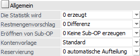
Ø Die Statistik wird
An dieser Stelle stehen folgende Möglichkeiten zur Auswahl:
ü 0 - erzeugt
In diesem Fall wird
die Statistik geschrieben, sofern im Artikelstamm die Option Statistik auf
Einzelzeile oder Summenzeile gesetzt ist bzw. in der Artikelzeile in der
Belegmitte nicht die Option "keine Statistik" gewählt ist.
ü 1 - nicht erzeugt
In diesem
Fall wird die Statistik nicht geschrieben, egal, welche Einstellung im
Artikelstamm oder in der Artikelzeile in der Belegmitte vorgenommen wurde.
Hinweis
Die Statistik kann wahlweise auf Basis der Rechnungs- bzw. der Lieferadresse ausgewertet werden.
Ø Restmengenvorschlag
An dieser Stelle kann definiert werden, wie mit Restmengen verfahren werden soll. Hierfür stehen folgende Varianten zur Verfügung:
ü 0 - Differenz
Bei
Teillieferungen wird die noch ausstehende Menge vorgeschlagen.
ü 1 - verfügbar
Bei
Teillieferungen wird die verfügbare, maximal jedoch die noch zu liefernde Menge
vorgeschlagen.
ü 2 - ausbuchen
Bei
Teillieferungen wird der verbleibende Rest automatisch ausgebucht.
ü 3 - Nullmenge vorschlagen
Bei
Teillieferungen wird 0 vorgeschlagen und es muss die Menge manuell eingeben
werden.
ü 4 - Lagerstand
Bei
Teillieferungen wird der Lagerstand, maximal jedoch die noch zu liefernde Menge
vorgeschlagen.
Diese Einstellung gilt sowohl für die "normale" Belegerfassung sowie für das "Belegerfassen - Kontrakte abbuchen".
Beispiel
Es wurde ein Auftrag über 10 Stück des Artikels 10001 erfasst. Der Lagerstand beträgt 4 Stück und es wird eine Teillieferung über 3 Stück durchgeführt. Der Mengenvorschlag bei der 2. Teillieferung stellt sich wie folgt dar:
ü 0 - Differenz => 7 Stück
ü 1 - verfügbar => 4 Stück
ü 2 - ausbuchen => es gibt keine 2. Teillieferung da die Menge sofort ausgebucht wurde
ü 3 - Nullmenge vorschlagen => kein Mengenvorschlag
ü 4 - Lagerstand => 1 Stück
Hinweis
Bei der Restmengenbelegungsoption "4 - Lagerstand" oder "1 - verfügbar" wird bei lagerneutralen Artikeln die Option "Differenz" verwendet!
Ø Eröffnen von Sub-OP
In der Belegart haben Sie die Möglichkeit festzulegen, dass Sub-OPs erzeugt werden. Hierbei kann unterschieden werden zwischen:
ü eigene OP-Zeilen pro unterschiedlichen Erlöskonten erzeugen
ü eigene OP-Zeilen pro Artikelposition erzeugen
ü eigene OP-Zeilen pro Hauptartikelzeilen erzeugen. D.h. wird ein Hautartikel aufgeteilt, so wird trotzdem "nur" ein Offener Posten für diesen Hauptartikel erzeugt.
Beispiel A
Sie drucken eine Faktura, in der drei unterschiedliche Erlöskonten angesprochen werden = 3 OPs: FA21-100-1, FA21-100-2, FA21-100-3.
Beispiel B
Sie drucken eine Faktura, in der drei Artikel angesprochen werden = 3 OPs: FA21-4715-1, FA21-4715-2, FA21-4715-3.
Beispiel C
Sie drucken eine Faktura mit dem Hauptartikel 10018 bei dem 2 Lagerorte angegeben wurden, und dem Hauptartikel 10022 bei dem 3 Seriennummern angegeben wurden = 2 OPs: FA21-0813-1; FA21-0812-2.
Ø Kontenvorlage
In der Belegart kann eine entsprechende Kontenvorlage hinterlegt werden über die beim Erfassen eines Beleges definiert wird, woher bestimmte Werte (Summenrabatt, Preisfindung, Teillieferung erlaubt, Priorität, Kostenträger, Steuerleiste, Tour, Gebiet, Kreditlimitprüfung (Warn-/Sperrtexte, Warn-/Sperrbeträge), OP-Kennzeichen, Vertreter, Belegkopftexte) herangezogen werden. Nähere Informationen entnehmen Sie bitte dem Kapitel Kontenvorlagen.
Ø Reservierung (Einkaufsbelegart)
Wird in der Fakturierung mit Reservierungen gearbeitet, so kann über diese Option gesteuert werden, ob bei einer Mengeneingabe / -änderung in einer Lieferantenbestellung bzw. einem Lieferantenlieferschein, eine manuelle Aufteilung vorgenommen wird oder die Reservierungen vom Programm anhand der Liefertermine der Kundenaufträge neu berechnet werden sollen.
ü 0 - automatische
Aufteilung
Beim Druck der Lieferantenbestellung werden die
Reservierungszeilen neu erzeugt bzw. werden bei einer Änderung des Lieferdatums
die zugehörigen Reservierungszeilen mit geändert.
ü 1 - manuelle Aufteilung
Es wird
beim Editieren der Menge das Fenster "Belegerfassen - Artikelreservierungen
bearbeiten" geöffnet, in dem für jeden Auftrag die Reservierungsmenge vom Lager
bzw. von der Lieferantenbestellung editiert werden kann.
Hinweis
Handelt es sich bei dem Reservierungsartikel um einen Ausprägungsartikel, so erfolgt die Reservierung immer manuell.
Ø Reservierung (Verkaufsbelegart)
Es kann eingestellt werden, ob beim Erfassen eines Auftrages die Menge manuell oder automatisch reserviert werden soll.
ü 0 - automatische
Aufteilung
Beim Druck eines Kundenauftrages wird für die Artikel mit
Reservierungskennzeichen die Bestellmenge reserviert, sofern eine nicht
reservierte Menge auf Lager ist oder eine Lieferantenbestellung ohne
Reservierung vorhanden ist.
ü 1 - manuelle Aufteilung
Bei der
Eingabe / Änderung der Menge bzw. bei Anwahl der Taste F8 in der Artikelspalte
wird das Reservierungsfenster geöffnet. Dort werden alle offenen
Lieferantenbestellungen angezeigt und die in der Belegmitte eingegebene
Bestellmenge kann vom Lager bzw. von einer Lieferantenbestellung reserviert
werden.
Unterschreitung
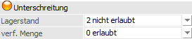
Ø Unterschreitung Lagerstand
Die Prüfung auf Unterschreitung des Lagerstandes erfolgt in den Belegstufen "3 - Lieferschein" und "4 - Faktura" und kann auf verschiedene Weise gehandhabt werden.
ü 0 - erlaubt
Die Unterschreitung
eines Lagerstandes kleiner 0 ist erlaubt.
ü 1 - erlaubt mit Warnung
Die
Unterschreitung eines Lagerstandes kleiner 0 ist erlaubt, es wird hierauf
allerdings bei der Belegerfassung hingewiesen.
ü 2 - nicht erlaubt
Die
Unterschreitung eines Lagerstandes kleiner 0 ist verboten.
ü 3 - erlaubt mit Warnung (abzgl.
kommissionierter Menge)
Die Unterschreitung eines Lagerstandes kleiner 0 ist
erlaubt; es wird hierauf allerdings bei der Belegerfassung hingewiesen. Bei der
Berechnung des Lagerstandes wird die bereits kommissionierte Menge
berücksichtigt.
ü 4 - nicht erlaubt (abzgl.
kommissionierter Menge)
Die Unterschreitung eines Lagerstandes kleiner 0 ist
verboten, wobei bei der Berechnung des Lagerstandes die bereits kommissionierte
Menge berücksichtigt wird.
ü 5 - erlaubt mit Warnung (inkl.
Lagerorte)
Es wird geprüft, ob die eingegebene Menge auch tatsächlich am
Lagerort verfügbar ist. Sollte dieses nicht der Fall sein, so wird eine
Hinweismeldung am Bildschirm ausgegeben und die Lagerortkugel in Violett
dargestellt.
ü 6 - nicht erlaubt (inkl.
Lagerorte)
Eine Unterschreitung des Lagerbestands auf einem Lagerort ist
nicht erlaubt. Die Lagerortkugel wird in solch einem Fall in Violett
dargestellt.
Hinweis
Bei der Prüfung auf Unterschreitung des generellen Lagerstandes wird nicht nur die Einzelzeile geprüft, sondern bei Vorhandensein gleicher Artikel in einem Beleg wird die Summe entsprechend berücksichtigt. Eine Ausnahme bilden hierbei Lagerorten des Lagermanagements, d.h. bei diesen findet keine kumulierte Prüfung statt.
Beispiel
Der Lagerstand des Artikels 10001 beträgt 12 Stück. Nun wird ein Lieferschein erfasst und in zwei Artikelzeilen der Artikel 10001 mit einer Menge von je 8 Stück erfasst.
Bei einer Sperre bei Lagerstandsunterschreitung (Lagerstandsunterschreitung ist nicht erlaubt) wird der Belegdruck abgebrochen und ein entsprechender Hinweis ausgegeben.
Achtung
Artikel mit Identnummern werden nur dann berücksichtigt, wenn in den FAKT-Parametern die Option "Lagerstand prüfen" im Bereich "Identnummerartikel bei Abbuchung" aktiviert ist.
Ø Unterschreiten der verfügbaren Menge
In der Stufe "2- Auftrag" kann geprüft werden, ob die eingegebene Menge zum angegebenen Lieferdatum verfügbar ist. Hierfür stehen folgende Varianten zur Verfügung:
ü 0 - erlaubt
Die Unterschreitung
der verfügbaren Menge ist erlaubt.
ü 1 - erlaubt mit Warnung
Ist die
eingegebene Menge zum angegebenen Lieferdatum nicht verfügbar, dann wird hierauf
in Form einer Hinweismeldung hingewiesen.
ü 2 - nicht erlaubt
Ist die
eingegebene Menge zum angegebenen Lieferdatum nicht verfügbar, dann kann die
Zeile erst nach Eingabe einer verfügbaren Stückzahl verlassen werden.
ü 3 - erlaubt
mit Warnung inkl. Lagerorte
Bei dieser Option wird beim Berechnen der
verfügbaren Mengen die Menge der Lagerorte, bei denen die Option "beim
verfügbaren Lagerstand berücksichtigen" nicht aktiviert ist, nicht
berücksichtigt. Ist die eingegebene Menge zum angegebenen Lieferdatum nicht
verfügbar (abzüglich den Bestand auf nicht verfügbare Lagerorte), dann kann die
Zeile erst nach Eingabe einer verfügbaren Stückzahl verlassen werden.
ü 4 - nicht erlaubt inkl.
Lagerorte
Bei dieser Option wird beim Berechnen der verfügbaren Mengen die
Menge der Lagerorte, bei denen die Option "beim verfügbaren Lagerstand
berücksichtigen" nicht aktiviert ist, nicht berücksichtigt. Ist die eingegebene
Menge zum angegebenen Lieferdatum nicht verfügbar (abzüglich den Bestand auf
nicht verfügbare Lagerorte), dann kann die Zeile erst nach Eingabe einer
verfügbaren Stückzahl verlassen werden.
ü 5 - erlaubt mit Warnung (abzgl.
komm. Menge und inkl. Lagerorte)
Bei dieser Option werden beim Berechnen der
verfügbaren Mengen die bereits kommissionierten Mengen berücksichtigt und die
Menge der Lagerorte, bei denen die Option "beim verfügbaren Lagerstand
berücksichtigen" nicht aktiviert ist, nicht berücksichtigt. Ist die eingegebene
Menge zum angegebenen Lieferdatum nicht verfügbar (abzüglich des Bestands auf
nicht verfügbare Lagerorte), dann wird hierauf in Form einer Hinweismeldung
hingewiesen.
ü 6 - nicht erlaubt (abzgl. komm.
Menge und inkl. Lagerorte)
Bei dieser Option werden beim Berechnen der
verfügbaren Mengen die bereits kommissionierten Mengen berücksichtigt und die
Menge der Lagerorte, bei denen die Option "beim verfügbaren Lagerstand
berücksichtigen" nicht aktiviert ist, nicht berücksichtigt. Ist die eingegebene
Menge zum angegebenen Lieferdatum nicht verfügbar (abzüglich des Bestands auf
nicht verfügbare Lagerorte), dann kann die Zeile erst nach Eingabe einer
verfügbaren Stückzahl verlassen werden.
Bei den folgenden Arbeitsvorgängen wird die verfügbare Menge geprüft:
ü Im Belegerfassen (Stufe "2 - Auftrag") bei der Eingabe der Menge bzw. des Lieferdatums.
ü Im Belegerfassen (Stufe "2 - Auftrag") beim Verlassen der Belegzeile.
ü Im Belegerfassen (Stufe "3 - Lieferschein") beim Verlassen der Zeile, wenn Reservierungen verwendet werden.
ü Im Belegerfassen beim Speichern eines Auftrages.
ü Im Belegerfassen vor dem Folgestufendruck.
ü Beim Stapeldruck eines Auftrages (Menüpunkt "Belege drucken").
ü Im Telesales
ü Beim Editieren des kommissionierten Auftrags
Bei der Erfassung von Handelsstücklistenartikel wird auch die Verfügbarkeit der einzelnen Komponenten geprüft.
Bei Artikeln mit auftragsbezogener Bestellung wird die verfügbare Menge nicht geprüft, da hier die Disposition immer aufgrund eines Kundenauftrages geschrieben wird und daher zum Zeitpunkt der Erfassung die Menge nicht verfügbar sein kann.
Wird die verfügbare Menge unterschritten erhalt man die folgende Meldung:
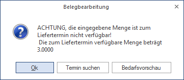
ü Ok
Die Meldung wird bestätigt
und die Auftragsmenge kann korrigiert werden.
ü Termin suchen
Es wird geprüft,
ob es in der Zukunft eine Lieferantenbestellung gibt, mit der die Auftragsmenge
erfüllt werden kann. Wenn diese der Fall ist, wird das Lieferdatum in der
Belegzeile auf das Eingangsdatum der Bestellung gesetzt. Wenn dies nicht der
Fall ist, wird eine Fehlermeldung ausgegeben und die Bedarfsvorschau
geöffnet.
ü Bedarfsvorschau
In der
Bedarfsvorschau werden alle Lieferanten und der frühestmögliche Liefertermin
angezeigt.
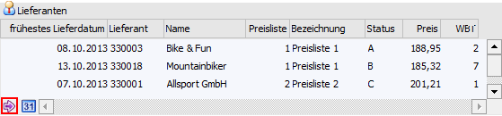
ü Zu dem ausgewählten Lieferdatum ist die Menge wieder verfügbar, da es vor diesem Datum bereits eine Lieferantenbestellung gibt. Es werden keine weiteren Aktionen durchgeführt und die Bedarfsvorschau geschlossen.
ü Zu dem ausgewählten Lieferdatum ist nur ein Teil der benötigten Menge verfügbar, da es vor diesem Datum bereits eine Lieferantenbestellung über einen Teil der Auftragsmenge gibt. Dann wird im Hintergrund eine Einkauf (Disposition) - Zeile über die benötigte Menge geschrieben.
ü Zu dem ausgewählten Lieferdatum ist die gesamte benötigte Menge nicht verfügbar, da es keine Lieferantenbestellungen gibt. Dann wird im Hintergrund eine Einkauf (Disposition) - Zeile über die gesamte Auftragsmenge geschrieben.
ü Zu dem ausgewählten Lieferdatum gibt es mehrere Kundenaufträge für die die Menge auch nicht verfügbar ist. Nach der Auswahl des Lieferanten wird gefragt, ob die Dispozeile für die gesamte nicht verfügbare Menge geschrieben werden soll (also auch für die anderen offenen Kundenaufträge).
Belegkopfformel
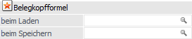
Ø Belegkopfformel beim Laden
Hier kann eine Formel eingegeben werden, die beim Bestätigen der Belegart in der Belegerfassung ausgeführt wird. Durch Drücken der F9-Taste kann nach allen bereits angelegten Formeln gesucht werden. Die Formel selbst kann nur im Formelstamm (WinLine FAKT - Stammdaten - Formelstamm) bearbeitet werden.
Ø Belegkopfformel beim Speichern
Hier kann eine Formel eingegeben werden, die beim Speichern des Beleges ausgeführt wird. Durch Drücken der F9-Taste kann nach allen bereits angelegten Formeln gesucht werden. Die Formel selbst kann nur im Formelstamm (WinLine FAKT - Stammdaten - Formelstamm) bearbeitet werden.
Hinweis
Das Ausführen der Belegkopfformeln erfolgt ausschließlich in der Belegerfassung.
Aktualisieren von Preisen
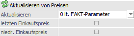
Ø Aktualisieren
In der Belegerfassung besteht die Möglichkeit, geänderte Preise in der Preisliste speichern zu lassen. Welche Preise gespeichert werden sollen, kann an dieser Stelle vorbelegt werden:
ü 0 - lt. Fakt-Parameter
Es wird
die Einstellung aus den Fakt-Parametern genommen.
ü 1 - kontenspezifische Preise nie
ändern
Wenn diese Option aktiviert wird, werden geänderte kontenspezifische
Preise nicht in die Preisliste zurück geschrieben.
ü 2 - kontenspezifische Preise immer
ändern
Wenn diese Option aktiviert wird, werden kontenspezifische Preise, die
im Beleg verwendet und geändert werden, in die Preislisten zurück
geschrieben.
ü 3 - alle Preise als
kontenspezifische Preise anlegen (Preis und Rabatt)
Wenn diese Option
aktiviert wird, werden alle geänderten Preise als kontenspezifische Preise mit
dem Preiskennzeichen "0 Preis und Rabatt" angelegt. Wenn es für den Artikel noch
keinen kontenspezifischen Preis gibt, wird ein Preislisteneintrag angelegt und
der Preis aus dem Beleg übernommen. Wenn ein Rabatt eingegeben bzw. geändert
wird, wird in der Preisliste das Kennzeichen "Rabatt in %" gespeichert. Wenn der
Rabatt nicht geändert wird, wird in der Preisliste das Kennzeichen "Rabattspalte
aus Artikelstamm" gespeichert. Wenn es für den Artikel schon einen
kontenspezifischen Preis gibt, wird dieser geändert, falls er im Beleg verwendet
wird.
ü 4 - alle Preise als allgemeine
Preise anlegen (Preis und Rabatt)
Wenn diese Option aktiviert wird, werden
alle vorhandenen Preise als allgemeine Preise mit dem Preiskennzeichen "0 Preis
und Rabatt" angelegt. Wenn es für den Artikel noch keinen allgemeinen Preis
gibt, wird ein Preislisteneintrag angelegt und der Preis aus dem Beleg
übernommen. Wenn ein Rabatt eingegeben bzw. geändert wird, wird in der
Preisliste das Kennzeichen "Rabatt in %" gespeichert. Wenn der Rabatt nicht
geändert wird, wird in der Preisliste das Flag "Rabattspalte aus Artikelstamm"
gespeichert. Wenn es für den Artikel schon einen allgemeinen Preis gibt, wird
dieser geändert, falls er im Beleg verwendet wird.
ü 5 - alle Preise als
gruppenspezifische Preise anlegen (Preis und Rabatt)
Mit dieser Option werden
alle geänderten Preise als gruppenspezifische Preise mit dem Preiskennzeichen "0
Preis und Rabatt" angelegt. Wenn es für den Artikel noch keinen
gruppenspezifischen Preis der entsprechenden Gruppe gibt, wird ein
Preislisteneintrag angelegt und der Preis aus dem Beleg übernommen. Wenn ein
Rabatt eingegeben bzw. geändert wird, wird in der Preisliste das Kennzeichen
"Rabatt in %" gespeichert. Wenn der Rabatt nicht geändert wird, wird in der
Preisliste das Kennzeichen "Rabattspalte aus Artikelstamm" gespeichert. Wenn es
für den Artikel schon einen gruppenspezifischen Preis der entsprechenden Gruppe
gibt, wird dieser geändert, falls er im Beleg verwendet wird.
ü 6 - alle Preise als
kontenspezifischen Preise anlegen (nur Preis)
Wird diese Option verwendet, so
werden angegebenen Preise als kontenspezifische Preise mit dem Preiskennzeichen
"1 Preis" angelegt. D.h. wenn es für den Artikel noch keinen kontenspezifischen
Preis gibt wird ein Preislisteneintrag angelegt und der Preis aus dem Beleg
übernommen. Wenn es für den Artikel schon einen kontenspezifischen Preis gibt,
wird dieser geändert.
ü 7 - alle Preise als allgemeine
Preise anlegen (nur Preis)
Bei Verwendung dieser Option werden alle
geänderten Preise als kontenspezifische Preise mit dem Preiskennzeichen "1
Preis" angelegt. D.h. wenn es für den Artikel noch keinen allgemeinen Preis
gibt, wird ein Preislisteneintrag angelegt und der Preis aus dem Beleg
übernommen. Wenn es für den Artikel schon einen allgemeinen Preis gibt, wird
dieser geändert, falls er im Beleg verwendet wird.
ü 8 - alle Preise als
gruppenspezifische Preise anlegen (nur Preis)
Wenn diese Option gewählt wird,
werden alle geänderten Preise als gruppenspezifische Preise mit dem
Preiskennzeichen "1 Preis" angelegt. D.h. wenn es für den Artikel noch keinen
gruppenspezifischen Preis der entsprechenden Gruppe gibt, wird ein
Preislisteneintrag angelegt und der Preis aus dem Beleg übernommen. Wenn es für
den Artikel schon einen gruppenspezifischen Preis der entsprechenden Gruppe
gibt, wird dieser geändert, falls er im Beleg verwendet wird.
Hinweis
Die hier getroffene Vorbelegung kann während der Belegerfassung geändert werden.
Ø letzten Einkaufspreis aktualisieren
Bei Aktivierung dieser Option, wird beim Erfassen eines Einkaufsbeleges in der Belegstufe "8 - L.Faktura" der Einkaufspreis in den Artikelstamm in das Feld "letzter Einkaufspreis" zurückgeschrieben. In den Fakt-Parametern kann zusätzlich noch eingestellt werden, ob der Zeilenrabatt, der Summenrabatt und der Skonto berücksichtigt werden sollen.
Ø niedrigsten Einkaufspreis aktualisieren
Bei Aktivierung dieser Option, wird beim Erfassen eines Einkaufsbeleges in der Belegstufe "8 - L.Faktura" der Einkaufspreis in den Artikelstamm in das Feld "niedrigster Einkaufspreis" zurückgeschrieben, wenn der im Artikelstamm gespeicherte Einkaufspreis größer als der aktuelle oder 0 ist. In den Fakt-Parametern kann zusätzlich noch eingestellt werden, ob der Zeilenrabatt, der Summenrabatt und der Skonto berücksichtigt werden sollen.
Optionen
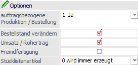
Ø auftragsbezogene Produktion / Bestellung
Es stehen die folgenden Selektionen bei dieser Option zur Verfügung
ü 0 - Nein
Bei dieser Option
werden keine Dispositionszeilen erzeugt. Dies ist auch der Fall, wenn der
Artikel selber auf "1 - Auftragsbezogene Produktion/Bestellung" gesetzt wurde
(WinLine FAKT - Stammdaten - Artikelstamm - Artikel - Register "Lager" - Option
"Produktion / Bestellung").
ü 1 - Ja
Bei dieser Option wird
bei dem Verkauf (Auftragsbestätigung) von Produktionsartikeln automatisch eine
Produktions-Dispositions-Zeilen erzeugt, wenn auch der Artikel selber auf "1 -
Auftragsbezogene Produktion/Bestellung" (WinLine FAKT - Stammdaten -
Artikelstamm - Artikel - Register "Lager" - Option "Produktion / Bestellung")
gesetzt wurde. Bei dem Verkauf von auftragsbezogenen Hauptartikel wird hingegen
automatisch eine Einkaufs-Dispositions-Zeile gebildet.
ü 2 - Ja (ohne
Packlistenautomatik)
Auch mit dieser Option wird bei dem Verkauf
(Auftragsbestätigung) von Produktionsartikeln automatisch eine
Produktions-Dispositions-Zeilen erzeugt, wenn auch der Artikel selber auf "1 -
Auftragsbezogene Produktion/Bestellung" (WinLine FAKT - Stammdaten -
Artikelstamm - Artikel - Register "Lager" - Option "Produktion / Bestellung")
gesetzt wurde. Bei dem Verkauf von auftragsbezogenen Hauptartikel wird hingegen
automatisch eine Einkaufs-Dispositions-Zeile gebildet. Wenn dann die Lieferantenbestellung als Lieferschein gedruckt wird, oder
der Produktionsauftrag endgemeldet wird, wird im dazugehörigen Kundenauftrag das
Packlisten-Flag nicht gesetzt (im Gegensatz zur Option 1), d.h. der Auftrag wird
nicht automatisch auf der Packliste angedruckt bzw. im Menüpunkt
"Kundenlieferscheine drucken" angezeigt.
Hinweis
Mit Hilfe dieser Dispositionszeilen können voll- bzw. halbautomatisch Produktionsaufträge angelegt bzw. Bestellungen direkt gedruckt werden.
Ø Bestellstand verändern
An dieser Stelle kann definiert werden, ob der Auftrag den Bestellstand erhöht und Lieferschein bzw. Rechnung ihn reduziert.
Ø Umsatz / Rohertrag
An dieser Stelle kann definiert werden, ob die Werte "Umsatz" und "Rohertrag" im Artikelstamm berechnet werden sollen.
Ø Fremdfertigung
Mit Hilfe dieser Option wird die Belegart als "Fremdfertigungsbelegart" gekennzeichnet. D.h. diese kann in dem Feld "FFG-Belegart" (WinLine START - Parameter - Applikations-Parameter - PPS-Parameter - Parameter) hinterlegt werden.
Ø Stücklistenartikel
Über diese Option, welche nur für Verkaufsbelegarten verfügbar ist, kann gesteuert werden, dass ein Handelsstücklistenartikel auch gleich vom Lager genommen werden kann.
ü 0 - wird immer erzeugt
Die
Handelsstückliste wird immer erzeugt und die Komponenten werden vom Lager
abgebucht.
(diese Einstellung wird auch als Standardeinstellung verwendet)
ü 1 - wird immer vom Lager
genommen
Der Handelsstücklistenartikel wird immer vom Lager genommen. D.h.
das Handelsstücklistenfenster wird nie geöffnet, im Belegerfassen (Register
"Detailinfo") gibt es auch keinen Button zum Öffnen der Stückliste und die
Komponenten werden nicht berücksichtigt (weder in der Disposition noch bei der
eigentlichen Lagerbuchung). Im Register "Detailinfo" wird unter der angegebenen
Menge nur den Hinweis "vom Lager" angezeigt. D.h. dieser Artikel wird vom Lager
genommen.
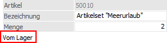
ü 2 - Fragen
Wird ein neuer
Handelsstücklistenartikel im Belegerfassen eingegeben, erfolgt die Abfrage ob
der Artikel vom Lager genommen werden soll oder nicht.
ü 3 - nur fragen wenn Lagerstand
vorhanden
Wird ein neuer Handelsstücklistenartikel im Belegerfassen
eingegeben, erfolgt die Abfrage ob der Artikel vom Lager genommen werden soll
oder nicht nur dann, wenn vom betroffenen Artikel ein Lagerstand vorhanden
ist.
Wenn die Handelsstückliste vom Lager genommen werden soll und der
Beleg in den Belegstufen Auftrag, Lieferschein oder Faktura nicht gedruckt
wurde, so wird in der Belegmitte (Register "Detailinfo") der Stücklisten-Button
angezeigt und eine Information gegeben, dass die Stückliste vom Lager genommen
wird.
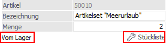
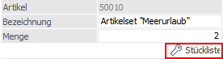
ü bei der Prüfung der "Lagerstandsunterschreitung" sowie der "verfügbaren Menge" im Belegerfassen oder im Menüpunkt "Belegdruck" der Lagerstand der Handelsstückliste und nicht jener der Komponenten berücksichtigt!
ü beim Expandieren von Artikelmakros im Belegerfassen die Handelsstückliste wie bei der manuellen Eingabe entweder vom Lager genommen oder produziert.
ü beim Import von Belegen via Batchbeleg mit der Einstellung "2 Fragen" in der Belegart immer die Einstellung "Ja" herangezogen!
ü im Menüpunkt "Kundenbestellungen bearbeiten" diese Handelsstückliste wie ein "Lagerartikel" berücksichtigt. D.h. es wird der verfügbare Lagerstand mitgerechnet bzw. kann die Liefermenge editiert.
Ø ATLAS-Ausfuhr
Diese Option ist nur in Mandanten vorhanden die als Länderkennzeichen (FIBU-Parameter) Deutschland hinterlegt haben. Wird diese Option aktiviert, wird beim Druck eines Lieferscheines eine XML-Datei erzeugt und entsprechend den "ATLAS-Ausfuhr"-Einstellungen (Menüpunkt "Funktionscodes") abgelegt.
Ausprägungen
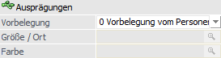
Ø Ausprägungen Vorbelegung
An dieser Stelle kann definiert werden, ob in der Belegerfassung automatisch eine Ausprägung genutzt werden soll.
ü 0 - Vorbelegung vom
Personenkonto
Beim Erfassen eines Beleges werden die hinterlegten
Ausprägungen (1 und 2) aus dem Personenkonto in das Register "Zusatz" eines
Beleges übernommen. Wird in der Belegmitte ein Hauptartikel eingegeben und ist
für die Kombination Hauptartikel + Ausprägung1 + Ausprägung2 ein Artikel
vorhanden so wird dieser automatisch verwendet und das Aufteilungsfenster nicht
geöffnet.
ü 1 - keine Vorbelegung
Beim
Erfassen eines Beleges werden Ausprägung 1 und 2 im Register "Zusatz" eines
Belegs nicht vorbelegt (obwohl ggfs. im Personenkonto hinterlegt). Es gibt daher
kein automatisches Suchen von Ausprägungsartikeln und das Aufteilungsfenster
wird immer geöffnet (ausgenommen in den Aufteilungsoptionen ist ein Aufteilen
nicht erlaubt).
ü 2 - Eingabe
Bei dieser Option
können Ausprägung 1 und 2 in den weiteren Feldern vorbelegt werden, welche
wiederum beim Erfassen eines Beleges in das Register "Zusatz" übernommen werden.
Wenn in der Belegmitte ein Hauptartikel eingegeben wird, und für die Kombination
Hauptartikel + Ausprägung1 + Ausprägung2 ein Artikel vorhanden ist, wird dieser
automatisch herangezogen und das Aufteilungsfenster nicht geöffnet.
ü 3 - Vorbelegung vom
Artikel
Beim Erfassen eines Beleges werden Ausprägung 1 und 2 im Register
"Zusatz" eines Beleges nicht vorbelegt. Wird in der Belegmitte ein Hauptartikel
eingegeben der eine Standardausprägung hinterlegt hat (Hinterlegung im
Artikelstamm), und für die Kombination Hauptartikel + Standardausprägung1 +
Standardausprägung2 ein Artikel vorhanden ist, wird dieser automatisch verwendet
und das Aufteilungsfenster nicht geöffnet.
Ø Ausprägung1 / Ausprägung2
Wird als Ausprägungsvorbelegung die Option "Eingabe" gewählt, so kann in diesen beiden Feldern eine Vorbelegung der Ausprägungen für die jeweilige Ausprägungsgruppe erfolgen.